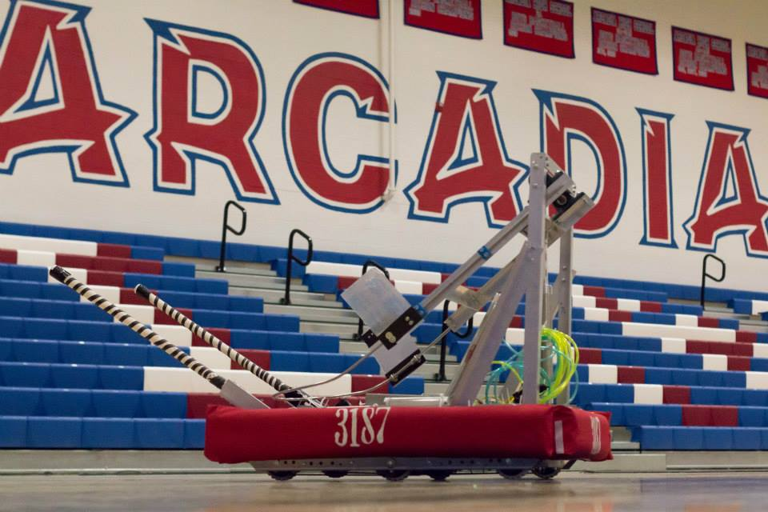

What we build.
Without a robot, we would't be able to compete. Take a look at our bots below.

Taurus (2014)
This is Taurus. He was built for the 2014 FRC Challenge, Aerial Assist. He is equipped with a BAD (Ball Acquisition Device), a shooter, and a 6 wheel drivetrain. The shooter is made up of two high pressure pneumatic pistons, making Taurus the first robot our team has built with a primary component operated by pneumatics.